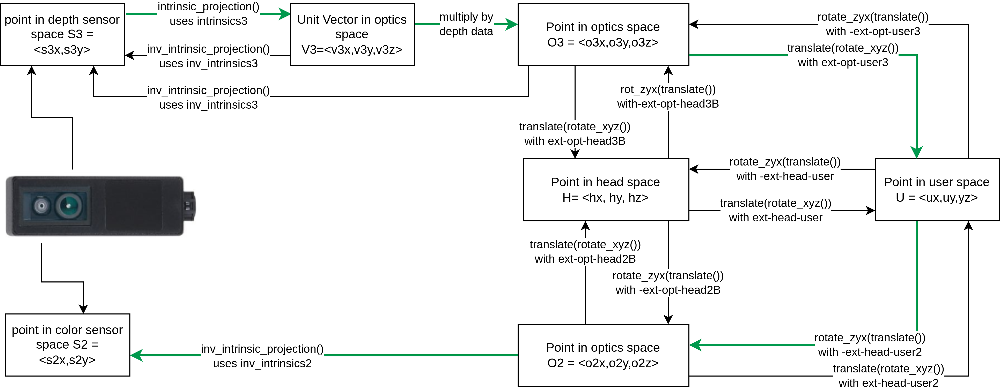
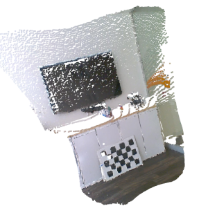

Introduction to ifm camera coordinate systems and their transformations
This guide should help newcomers understand camera coordinate systems (and frames), and their relative transformations, and provide an overview of the implementation for the O3R camera system.
There are a few different coordinate- systems / frames to be aware of:
(sensor / pixel space)
Optics space:
Optics space non-rectified
Optics space rectified
Head space
User space
IMU space
Robot space
Out-of-the-box, all O3R camera heads are calibrated. This means they can provide the user with point cloud data using a coordinate system relative to the camera head, this is the head-coordinate-system.
In the following a short overview is given to help you understand these three reference frames better. For details of their relation and the exact methods to retrieve the calibration parameters / perform the transformation with the methods provided in this example, please see the calibrations schema.
{kind=link}
Sensor-coordinate-system / pixel coordinate system:
The sensor-coordinate-system is a way of representing pixels on the camera sensor as a 2 dimensional vector, that is a classical pixel coordinate system: pixel rows, pixel columns.
The upper-left pixel in an depth sensor (image sensor) is by convention (0,0) Depending on the sensors’ number of pixel rows and columns the opposing image corner (bottom-right) is at `(#num_rows, #num_columns).
For the 38k imagers (03R222, O3R225) the bottom-right pixel is (172,224).
The implementation used in the example script are borrowed from NumPy.
Optics-coordinate-system (optics space):
Optics space non-rectified
The non rectified optical-coordinate system is a way of representing image rays as a 3 dimensional vector relative to the camera sensor.
These image rays may be distorted by the optics of the system (lens). A perfect pinhole camera model does not apply here, as can be seen by the respective intrinsic calibration parameters per camera. These intrinsic camera calibration parameters also hold information about the distortion: depending on which model - symmetrical / asymmetrical distortion parameters.
These images are supplied non-rectified (all 2-dimensional image arrays):
amplitude image
distance image
distance noise image
reflectivity image
confidence image
(2D RGB image)
All 3D ToF 2-dimensional images are non-rectified. This is by choice, since all rectification process include a resampling / interpolation. Resampling and interpolation does not preserve the geometrical positions (in pixel coordinates) or involves averaging over a local neighborhood in pixel space, for example “mixes” geometrical distinct signal.
For details see intrinsic calibration and inverse intrinsic calibration.
Optics space rectified
The optical-coordinate-system is a way of representing position in real space as a 3 dimensional vector relative to the camera sensor.
The convention used by O3R is a right-handed Cartesian coordinate system where (0,0,0) is the center of the camera optics. The z direction is directly pointing out of the sensor (that is orthogonal to the front face), x direction is pointing in the opposite direction from the FAKRA-connector, and y direction is pointing “up” (extending the two other directions conforming with the definition of a right handed coordinate system).
The difference between this optics coordinate frame and the head coordinate frame is the their respective origin. The optics coordinate frame and head coordinate frame are offset in two directions: trans_Z and trans_X.
Head-coordinate-system (head space):
The head-coordinate-system is a way of representing position in real space as a 3 dimensional vector relative to the camera head.
The convention used by O3R is a right-handed Cartesian coordinate system, where (0,0,0) is the center of the rear face of the camera: intersection point of two lines of diagonally opposing mounting points. The z direction is directly pointing out of front of the camera (that is orthogonal to the front face), x direction is pointing in the opposite direction from the FAKRA-connector, and y direction is pointing “up” (extending the two other directions conforming with the definition of a right handed coordinate system).
Defining where the camera is
User-coordinate-system:
Often roboticists will refer to the this as the robot-coordinate-system, it is a way of representing positions relative to whatever feature is most convenient to measure from on their machinery.
In order to receive point clouds in the user-coordinate-system directly from the O3R VPU, The user needs to define where the camera head is positioned within the user-coordinate-system, this is called the extrinsic calibration. Specifically this is called the “extHeadToUser” parameter which can be configured for each port of the O3R system.
Extrinsic calibration:
Extrinsic calibration data takes the form of 6 degrees of freedom pose, x-y-z translation and roll, pitch, yaw (x-y-z rotations). These can be used to translate from one coordinate system to another.
O3R extrinsic parameters are used to transform points from one coordinate system to another. See ‘The big picture’ for details of the processing steps to translate camera data from one form to another.
Using calibration data stored on the camera head:
Generating point clouds from scratch:
The following diagram demonstrates how to use the calibration data and example functions to translate one form of camera data to another.
The names used this diagram match the functions and variables demonstrated in examples such as 2D-3D Registration. The result of that example is shown below, where a point cloud that has been colored by associating depth data with color data from an O3R225 camera.

Glossary
Intrinsic calibration:
Intrinsic parameters encode the magnification and radial distortion of a lens in a way that we can take a position in sensor space, that is, a pixel, and determine the path that light can take to arrive at that position.
In essence, intrinsic projection turns a point in sensor space into a direction in the optical-coordinate-system.
There are various ways of compensating for the distortion caused by camera optics. These are called optical models. O3R currently uses 2 optical models and provides a model ID corresponding to the optical model used for a given sensor.
The intrinsic_projection() function can take a set of intrinsic parameters and a modelID and return unit vectors corresponding to the path that light took to arrive at that point.
Inverse-Intrinsic calibration:
Inverse-intrinsic are used to determine where on a sensor a given ray of light will be detected. This encodes the same information as the intrinsic calibration but is provided separately to simplify implementation.
In essence, inverse-intrinsic projection turns a point in the optical-coordinate-system into a point in the sensor space.
Inverse-intrinsic parameters, like intrinsic parameters, also use two separate optical models. In the calibration examples provided, the function inv_intrinsic_projection() applies inverse-intrinsic data to a point or point cloud to define positions in sensor space.